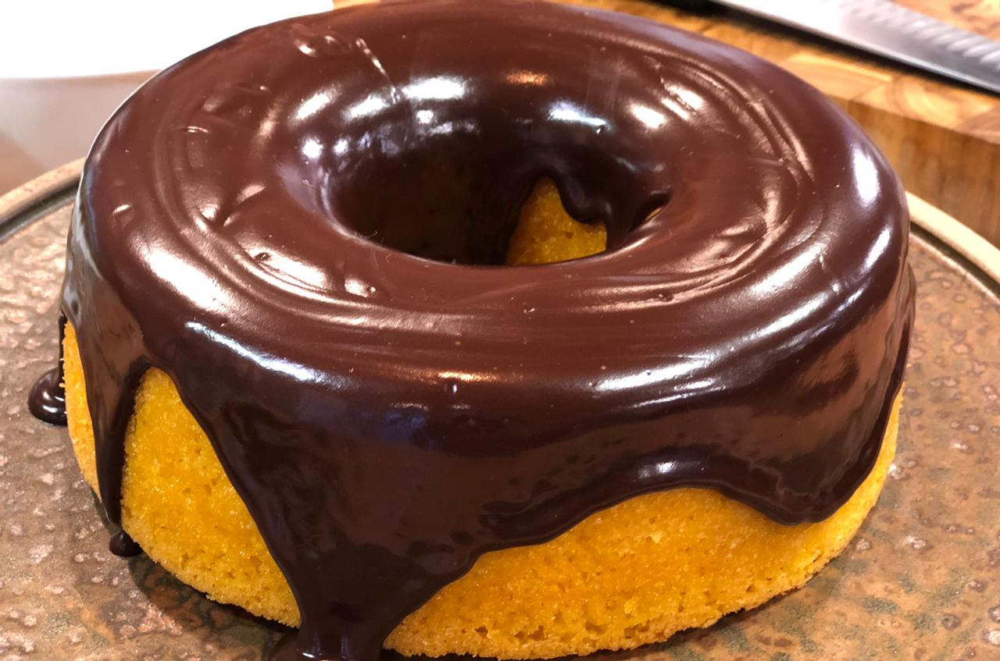

Um doce para toda hora: receita fácil de bolo de cenoura.

Escrito por Giovanna
Perfeito para qualquer momento do dia, o bolo de cenoura conquista pelo sabor simples e irresistível. Com preparo rápido e ingredientes acessíveis, ele é ideal para quem busca praticidade sem abrir mão do prazer de um doce caseiro. Sua massa fofinha combinada com a cobertura de chocolate traz aquele toque especial que agrada a todos. Uma receita que transforma pequenos momentos em algo ainda mais gostoso, confira abaixo a receita:
Ingredientes
Massa
- 1/2 xícara (chá) de óleo
- 4 ovo
- 2 e 1/2 xícaras (chá) de farinha de trigo
- 3 cenouras medias picadas
- 2 xícaras (chá) de açúcar
- 1 colher (sopa) de fermento em pó
Cobertura
- 1 Colher (sopa) de manteiga
- 1 xícara (chá) de açúcar
- 3 colheres (sopa) de chocolate em pó
- 1 xícara (chá) de leite
Modo de preparo
Massa
- No liquidificador, bata a cenoura, os ovos e o óleo até ficar homogêneo.
- Acrescente o açúcar e bata por cerca de 5 minutos.
- Transfira para uma tigela, adicione a farinha de trigo e misture bem.
- Acrescente o fermento e misture delicadamente com uma colher.
- Leve ao forno preaquecido a 180 °C por aproximadamente 40 minutos.
Cobertura
- Em uma tigela, misture a manteiga, o chocolate em pó, o açúcar e o leite.
- Leve ao fogo, mexendo sempre, até obter uma consistência cremosa.
- Despeje a calda ainda quente sobre o bolo.
Voltar ao topo da página